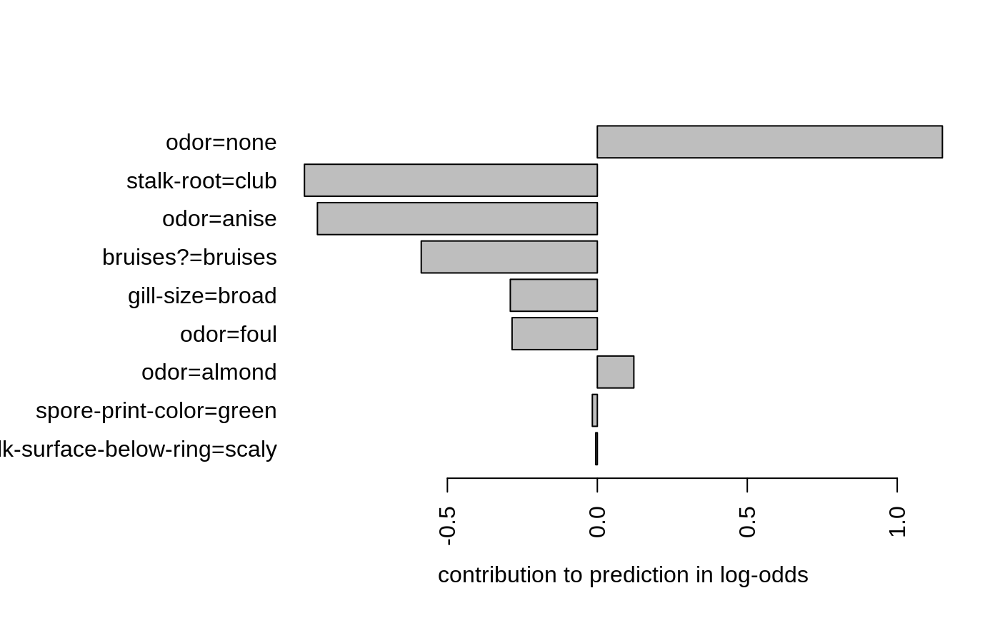

Predicted values based on either xgboost model or model handle object.
# S3 method for xgb.Booster predict(object, newdata, missing = NA, outputmargin = FALSE, ntreelimit = NULL, predleaf = FALSE, predcontrib = FALSE, approxcontrib = FALSE, predinteraction = FALSE, reshape = FALSE, ...) # S3 method for xgb.Booster.handle predict(object, ...)
Arguments
| object | Object of class |
|---|---|
| newdata | takes |
| missing | Missing is only used when input is dense matrix. Pick a float value that represents missing values in data (e.g., sometimes 0 or some other extreme value is used). |
| outputmargin | whether the prediction should be returned in the for of original untransformed
sum of predictions from boosting iterations' results. E.g., setting |
| ntreelimit | limit the number of model's trees or boosting iterations used in prediction (see Details).
It will use all the trees by default ( |
| predleaf | whether predict leaf index. |
| predcontrib | whether to return feature contributions to individual predictions (see Details). |
| approxcontrib | whether to use a fast approximation for feature contributions (see Details). |
| predinteraction | whether to return contributions of feature interactions to individual predictions (see Details). |
| reshape | whether to reshape the vector of predictions to a matrix form when there are several prediction outputs per case. This option has no effect when either of predleaf, predcontrib, or predinteraction flags is TRUE. |
| ... | Parameters passed to |
Value
For regression or binary classification, it returns a vector of length nrows(newdata).
For multiclass classification, either a num_class * nrows(newdata) vector or
a (nrows(newdata), num_class) dimension matrix is returned, depending on
the reshape value.
When predleaf = TRUE, the output is a matrix object with the
number of columns corresponding to the number of trees.
When predcontrib = TRUE and it is not a multiclass setting, the output is a matrix object with
num_features + 1 columns. The last "+ 1" column in a matrix corresponds to bias.
For a multiclass case, a list of num_class elements is returned, where each element is
such a matrix. The contribution values are on the scale of untransformed margin
(e.g., for binary classification would mean that the contributions are log-odds deviations from bias).
When predinteraction = TRUE and it is not a multiclass setting, the output is a 3d array with
dimensions c(nrow, num_features + 1, num_features + 1). The off-diagonal (in the last two dimensions)
elements represent different features interaction contributions. The array is symmetric WRT the last
two dimensions. The "+ 1" columns corresponds to bias. Summing this array along the last dimension should
produce practically the same result as predict with predcontrib = TRUE.
For a multiclass case, a list of num_class elements is returned, where each element is
such an array.
Details
Note that ntreelimit is not necessarily equal to the number of boosting iterations
and it is not necessarily equal to the number of trees in a model.
E.g., in a random forest-like model, ntreelimit would limit the number of trees.
But for multiclass classification, while there are multiple trees per iteration,
ntreelimit limits the number of boosting iterations.
Also note that ntreelimit would currently do nothing for predictions from gblinear,
since gblinear doesn't keep its boosting history.
One possible practical applications of the predleaf option is to use the model
as a generator of new features which capture non-linearity and interactions,
e.g., as implemented in xgb.create.features.
Setting predcontrib = TRUE allows to calculate contributions of each feature to
individual predictions. For "gblinear" booster, feature contributions are simply linear terms
(feature_beta * feature_value). For "gbtree" booster, feature contributions are SHAP
values (Lundberg 2017) that sum to the difference between the expected output
of the model and the current prediction (where the hessian weights are used to compute the expectations).
Setting approxcontrib = TRUE approximates these values following the idea explained
in http://blog.datadive.net/interpreting-random-forests/.
With predinteraction = TRUE, SHAP values of contributions of interaction of each pair of features
are computed. Note that this operation might be rather expensive in terms of compute and memory.
Since it quadratically depends on the number of features, it is recommended to perform selection
of the most important features first. See below about the format of the returned results.
References
Scott M. Lundberg, Su-In Lee, "A Unified Approach to Interpreting Model Predictions", NIPS Proceedings 2017, https://arxiv.org/abs/1705.07874
Scott M. Lundberg, Su-In Lee, "Consistent feature attribution for tree ensembles", https://arxiv.org/abs/1706.06060
See also
Examples
## binary classification: data(agaricus.train, package='xgboost') data(agaricus.test, package='xgboost') train <- agaricus.train test <- agaricus.test bst <- xgboost(data = train$data, label = train$label, max_depth = 2, eta = 0.5, nthread = 2, nrounds = 5, objective = "binary:logistic")#> [1] train-error:0.046522 #> [2] train-error:0.043605 #> [3] train-error:0.023338 #> [4] train-error:0.028251 #> [5] train-error:0.011823# use all trees by default pred <- predict(bst, test$data) # use only the 1st tree pred1 <- predict(bst, test$data, ntreelimit = 1) # Predicting tree leafs: # the result is an nsamples X ntrees matrix pred_leaf <- predict(bst, test$data, predleaf = TRUE) str(pred_leaf)#> num [1:1611, 1:5] 4 3 4 4 5 3 3 4 3 3 ...# Predicting feature contributions to predictions: # the result is an nsamples X (nfeatures + 1) matrix pred_contr <- predict(bst, test$data, predcontrib = TRUE) str(pred_contr)#> num [1:1611, 1:127] 0 0 0 0 0 0 0 0 0 0 ... #> - attr(*, "dimnames")=List of 2 #> ..$ : NULL #> ..$ : chr [1:127] "cap-shape=bell" "cap-shape=conical" "cap-shape=convex" "cap-shape=flat" ...# verify that contributions' sums are equal to log-odds of predictions (up to float precision): summary(rowSums(pred_contr) - qlogis(pred))#> Min. 1st Qu. Median Mean 3rd Qu. Max. #> -3.064e-07 -1.913e-07 -4.851e-08 7.001e-08 2.419e-07 5.765e-07# for the 1st record, let's inspect its features that had non-zero contribution to prediction: contr1 <- pred_contr[1,] contr1 <- contr1[-length(contr1)] # drop BIAS contr1 <- contr1[contr1 != 0] # drop non-contributing features contr1 <- contr1[order(abs(contr1))] # order by contribution magnitude old_mar <- par("mar") par(mar = old_mar + c(0,7,0,0)) barplot(contr1, horiz = TRUE, las = 2, xlab = "contribution to prediction in log-odds")par(mar = old_mar) ## multiclass classification in iris dataset: lb <- as.numeric(iris$Species) - 1 num_class <- 3 set.seed(11) bst <- xgboost(data = as.matrix(iris[, -5]), label = lb, max_depth = 4, eta = 0.5, nthread = 2, nrounds = 10, subsample = 0.5, objective = "multi:softprob", num_class = num_class)#> [1] train-merror:0.040000 #> [2] train-merror:0.026667 #> [3] train-merror:0.026667 #> [4] train-merror:0.020000 #> [5] train-merror:0.020000 #> [6] train-merror:0.020000 #> [7] train-merror:0.013333 #> [8] train-merror:0.020000 #> [9] train-merror:0.020000 #> [10] train-merror:0.020000# predict for softmax returns num_class probability numbers per case: pred <- predict(bst, as.matrix(iris[, -5])) str(pred)#> num [1:450] 0.98502 0.00926 0.00572 0.98502 0.00926 ...# reshape it to a num_class-columns matrix pred <- matrix(pred, ncol=num_class, byrow=TRUE) # convert the probabilities to softmax labels pred_labels <- max.col(pred) - 1 # the following should result in the same error as seen in the last iteration sum(pred_labels != lb)/length(lb)#> [1] 0.02# compare that to the predictions from softmax: set.seed(11) bst <- xgboost(data = as.matrix(iris[, -5]), label = lb, max_depth = 4, eta = 0.5, nthread = 2, nrounds = 10, subsample = 0.5, objective = "multi:softmax", num_class = num_class)#> [1] train-merror:0.040000 #> [2] train-merror:0.026667 #> [3] train-merror:0.026667 #> [4] train-merror:0.020000 #> [5] train-merror:0.020000 #> [6] train-merror:0.020000 #> [7] train-merror:0.013333 #> [8] train-merror:0.020000 #> [9] train-merror:0.020000 #> [10] train-merror:0.020000#> num [1:150] 0 0 0 0 0 0 0 0 0 0 ...#> [1] TRUE# prediction from using only 5 iterations should result # in the same error as seen in iteration 5: pred5 <- predict(bst, as.matrix(iris[, -5]), ntreelimit=5) sum(pred5 != lb)/length(lb)#> [1] 0.02## random forest-like model of 25 trees for binary classification: set.seed(11) bst <- xgboost(data = train$data, label = train$label, max_depth = 5, nthread = 2, nrounds = 1, objective = "binary:logistic", num_parallel_tree = 25, subsample = 0.6, colsample_bytree = 0.1)#> [1] train-error:0.039306# Inspect the prediction error vs number of trees: lb <- test$label dtest <- xgb.DMatrix(test$data, label=lb) err <- sapply(1:25, function(n) { pred <- predict(bst, dtest, ntreelimit=n) sum((pred > 0.5) != lb)/length(lb) }) plot(err, type='l', ylim=c(0,0.1), xlab='#trees')